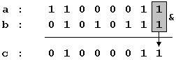

Boolean Operations
A
bit is the minimum amount of information that we can imagine, since it only stores either value 1 or 0, which represents either YES or NO, activated or deactivated, true or false, etc... that is: two possible states each one opposite to the other, without possibility of any shades. We are going to consider that the two possible values of a bit are 0 and 1.
Several operations can be performed with bits, either in conjunction with other bits or themselves alone. These operations receive the name of
boolean operations, a word that comes from the name of one of the mathematicians who contributed the more to this field: George Boole (1815-1864).
All these operations have an established behavior and all of them can be applied to any bit no matter which value they contain (either 0 or 1). Next you have a list of the basic boolean operations and a table with the behavior of that operation with every possible combination of bits.
AND
This operation is performed between two bits, which we will call
a and
b. The result of applying this AND operation is 1 if both
a and
b are equal to 1, and 0 in all other cases (i.e., if one or both of the variables is 0).
AND (&)
OR
This operation is performed between two bits (
a and
b). The result is 1 if either one of the two bits is 1, or if both are 1. If none is equal to 1 the result is 0.
OR (|)
XOR (Exclusive Or)
This operation is performed between two bits (
a and
b). The result is 1 if either one of the two bits is 1, but not in the case that both are. There for, if neither or both of them are equal to 1 the result is 0.
XOR (^)
NOT
This operation is performed on a single bit. Its result is the inversion of the actual value of the bit: if it was set to 1 it becomes 0, and if it was 0 it becomes 1:
NOT (~)
These are the 4 basic boolean operations (AND, OR, XOR and NOT). Combining these operations we can obtain any possible result from two bits.
In C++, these operators can be used with variables of any integer data type; the boolean operation is performed to all of the bits of each variable involved. For example, supposing two variables:
a and
b, both of type
unsigned char, where
a contains 195 (11000011 in binary) and
b contains 87 (or 01010111 in binary). If we write the following code:
1
2
3
4
|
unsigned char a=195;
unsigned char b=87;
unsigned char c;
c=a&b;
|
That means, that we conducted a bitwise AND operation between
a and
b. The operation is performed between the bits of the two variables that are located at the same position: The rightmost bit of
c will contain the result of conducting the AND operation between the rightmost bits of
a and
b:

The same operation is also performed between the second bits of both variables, and the third, and so on, until the operation is performed between all bits of both variables (each one only with the same bit of the other variable).
The final binary value of
c is 01000011, that is 67 in decimal numbers. So
195&87 is equal to
67.